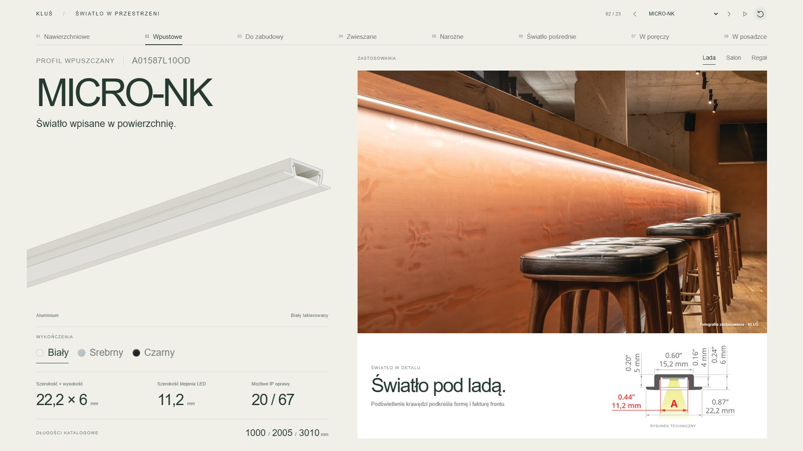
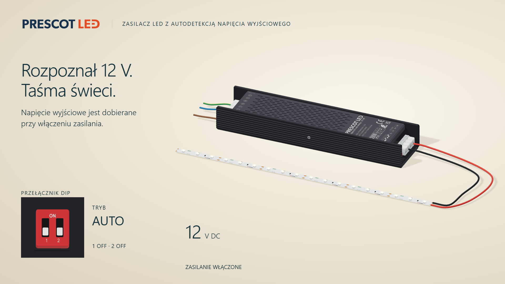

Światło w detalu
Kliknij miniaturę, aby otworzyć pokaz lub film.
3w1 · SLIM 4 mm · CRI 97
DELUX · PREMIUM · COB / WCOB · SPECIAL

Profile · wykończenia · zastosowania

AUTO · 12 V · 24 V · Film Full HD · 78 s